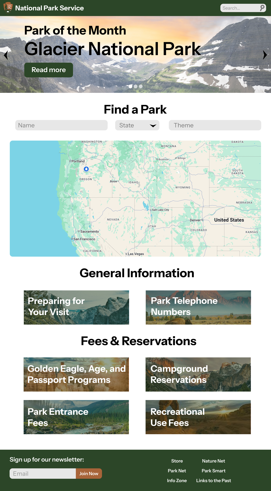
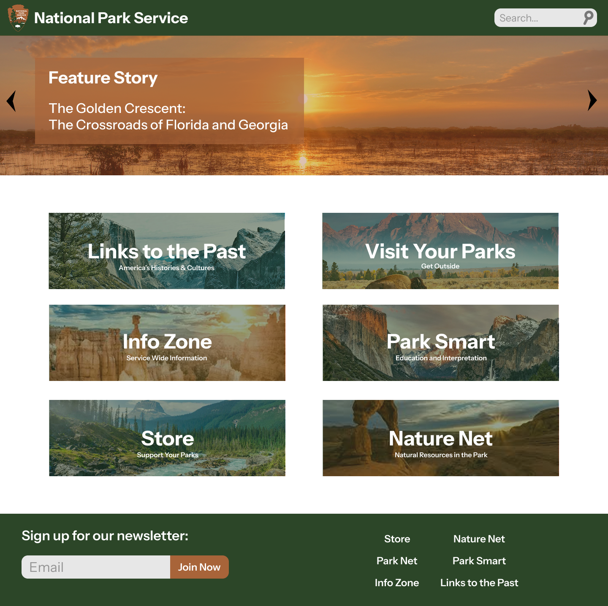
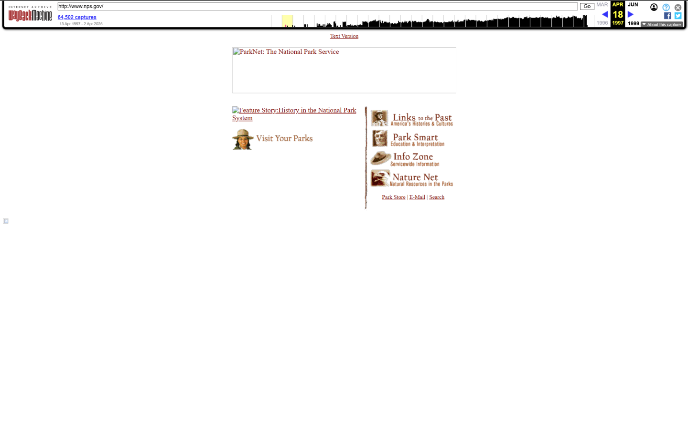
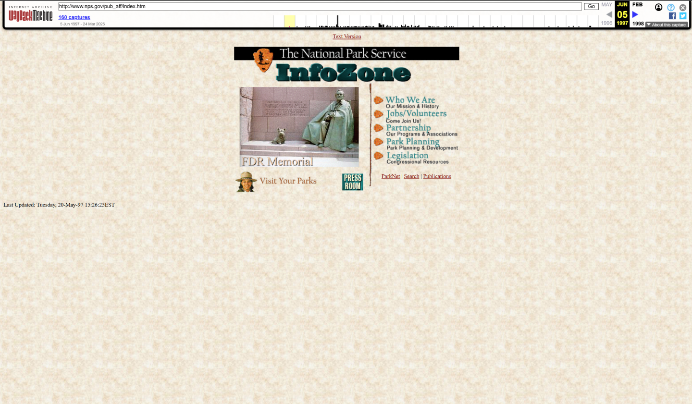
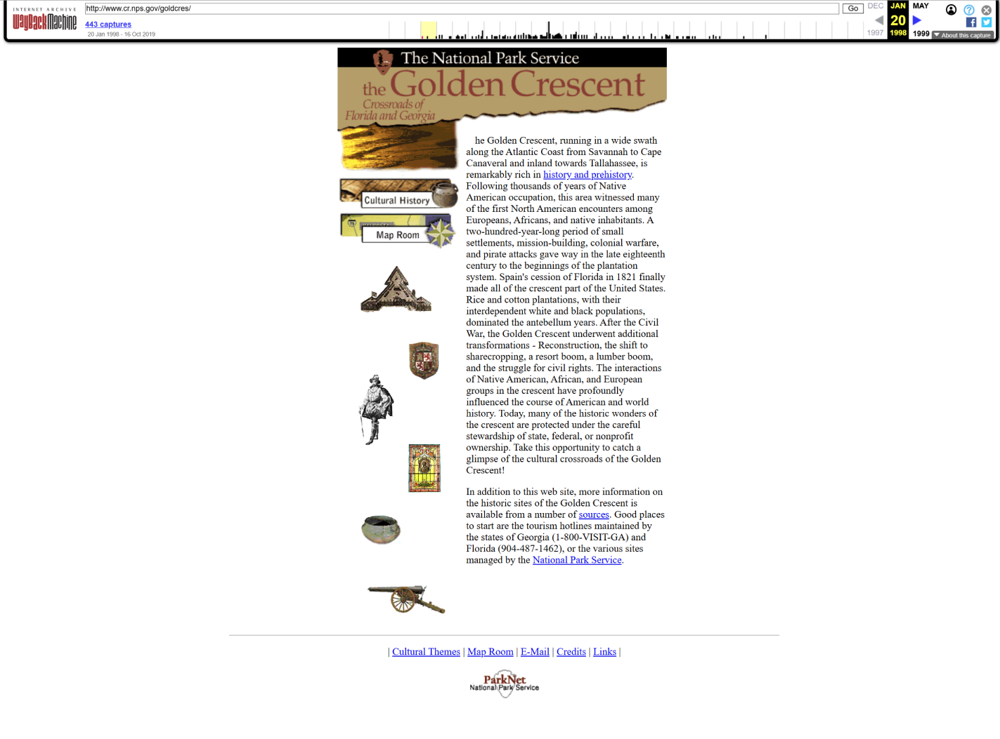
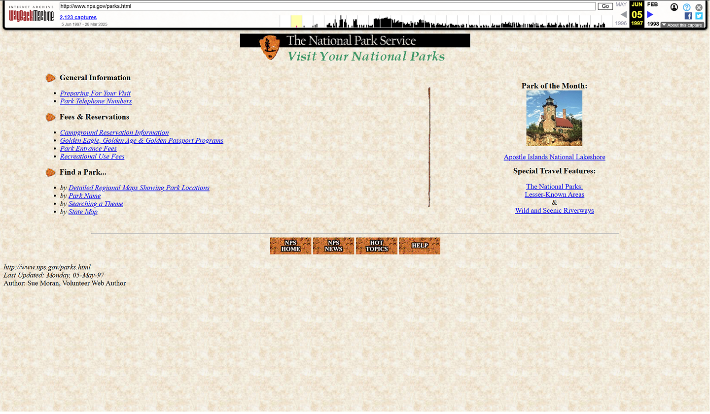

Splash Screen

Story Feature Page

Visit Your Parks Page

Landing Page

Old Home Page - April 18, 1997

Old Info Zone Page - April 18, 1997

Old Story Feature Page - April 18, 1997

Old Visit Your Parks Page - April 18, 1997